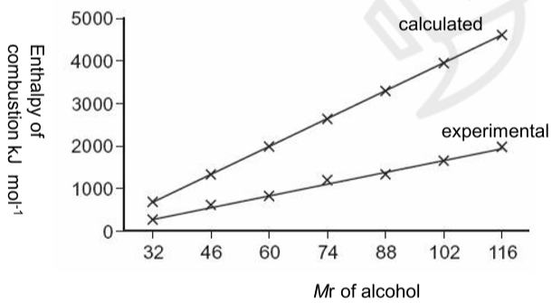
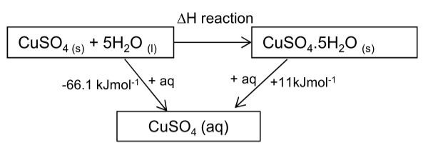
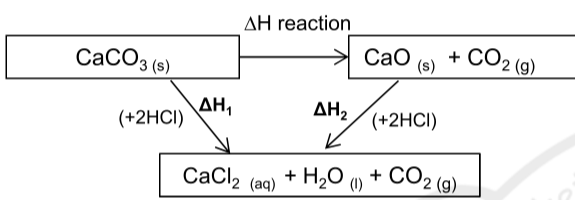

Energetics
Every chemical reaction takes in or gives out energy, because bonds have to be broken and new ones made. This topic shows you how to define, measure and calculate these enthalpy changes: with a thermometer and a polystyrene cup, with Hess cycles that find values nobody can measure directly, and with bond enthalpies.
Enthalpy changes
In energetics we split the world into two parts. The system is the chemicals that are reacting. The surroundings are everything else: the water they are dissolved in, the beaker, the thermometer, the air. When a reaction happens, energy moves between the two, and the total amount of energy stays the same.
The heat content of a system is called its enthalpy, \(H\). Nobody can measure the enthalpy of a substance on its own, but we can measure how much it changes. The enthalpy change, ΔH, is the heat energy transferred between the system and the surroundings when a reaction takes place at constant pressure. Most reactions in a lab happen in open containers, at the pressure of the atmosphere, so this is the quantity we actually measure.
- Exothermic: the system gives heat energy out to the surroundings, so the surroundings warm up. The products have less enthalpy than the reactants, so ΔH is negative. Combustion, neutralisation and respiration are all exothermic.
- Endothermic: the system takes heat energy in from the surroundings, so the surroundings cool down (or the reaction needs continuous heating). The products have more enthalpy than the reactants, so ΔH is positive. Thermal decomposition, such as CaCO3(s) → CaO(s) + CO2(g), and photosynthesis are endothermic.
Why do reactions transfer energy at all? Breaking a bond always takes in energy, because you have to pull the atoms apart against the attraction between the bonding electrons and the two nuclei. Making a bond always gives out energy. If the bonds made in the products are stronger overall than the bonds broken in the reactants, more energy comes out than goes in and the reaction is exothermic. If the bonds broken are stronger overall, the reaction is endothermic.
Enthalpy level diagrams and reaction profiles
An enthalpy level diagram puts the reactants and products at heights that show their enthalpy. The ΔH arrow always starts at the reactants and points to the products, so it points down for an exothermic reaction and up for an endothermic one. A reaction profile adds the path between them. Even an exothermic reaction has to climb a hump first: some bonds must start to break before new ones can form. The height of that hump above the reactants is the activation energy, Ea, the minimum energy that colliding particles need for a reaction to happen.
When you draw an enthalpy level diagram, label the vertical axis "enthalpy", write the formulas of the reactants and products on their levels, and draw the ΔH arrow from reactants to products with a single arrowhead. An exam answer that has the arrow pointing the wrong way loses the mark even if the levels are right.
Standard conditions
The size of an enthalpy change depends on the temperature, the pressure, the concentrations and the physical states of the substances. Water vapour condensing to liquid water gives out extra energy, for example, so burning methane to make H2O(l) gives a bigger ΔH than burning it to make H2O(g). To compare values fairly, chemists quote them under standard conditions and mark them with the symbol ⦵, as in ΔH⦵.
- Pressure: 100 kPa.
- Temperature: a stated temperature, normally 298 K (25 °C).
- Solutions: concentration 1.00 mol dm−3.
- Standard states: every substance is in the physical state it normally has at 100 kPa and 298 K. Water is H2O(l), oxygen is O2(g), bromine is Br2(l), iodine is I2(s), carbon is C(s) in the form of graphite.
ΔH values are quoted in kJ mol−1. The "per mole" refers to the equation as written: if you double every number in the equation, you double ΔH.
Standard enthalpy change definitions
You need to know five definitions word for word in meaning. Each one fixes three things: what reacts, how much (usually exactly one mole of something), and the conditions and states.
Standard enthalpy change of reaction, ΔrH⦵
The enthalpy change when the amounts of reactants shown in the equation react together under standard conditions, with all substances in their standard states.
Standard enthalpy change of formation, ΔfH⦵
The enthalpy change when one mole of a compound is formed from its elements in their standard states, under standard conditions.
The equation must make exactly one mole of the compound, which often means fractions in front of the elements:
2C(s) + 3H2(g) + ½O2(g) → C2H5OH(l) ΔfH⦵ = −277 kJ mol−1
Na(s) + ½Cl2(g) → NaCl(s) ΔfH⦵ = −411 kJ mol−1
The standard enthalpy of formation of an element in its standard state is zero. Forming O2(g) from O2(g) is no change at all. This is not true of other forms of the element: O3(g) or Br2(g) have non-zero values.
Standard enthalpy change of combustion, ΔcH⦵
The enthalpy change when one mole of a substance is burned completely in excess oxygen under standard conditions, with all reactants and products in their standard states.
C2H5OH(l) + 3O2(g) → 2CO2(g) + 3H2O(l) ΔcH⦵ = −1367 kJ mol−1
Combustion is always exothermic. Complete combustion of a compound of carbon and hydrogen gives only CO2 and H2O. With too little oxygen you get incomplete combustion, making carbon monoxide and soot (carbon). Less energy is released, because the carbon has not been fully oxidised. Notice also that the combustion of hydrogen, H2(g) + ½O2(g) → H2O(l), is the same reaction as the formation of water, so ΔcH⦵(H2) = ΔfH⦵(H2O(l)) = −286 kJ mol−1. In the same way, ΔcH⦵(C, graphite) = ΔfH⦵(CO2) = −394 kJ mol−1.
Standard enthalpy change of neutralisation, ΔneutH⦵
The enthalpy change when an acid and an alkali react together in solution to form one mole of water, under standard conditions.
For any strong acid with any strong alkali the value is about −57 kJ mol−1. The reason is that strong acids and alkalis are fully ionised, so the only reaction that actually happens is the same every time:
H+(aq) + OH−(aq) → H2O(l)
The other ions (Na+, Cl−, K+, NO3− and so on) are spectators. A weak acid such as ethanoic acid gives a slightly less exothermic value, because some energy is used up in ionising the acid as it reacts. The definition is per mole of water: H2SO4 + 2NaOH → Na2SO4 + 2H2O makes two moles of water, so the enthalpy change for that equation is about twice ΔneutH⦵.
Standard enthalpy change of atomisation, ΔatH⦵
The enthalpy change when one mole of gaseous atoms is formed from an element in its standard state, under standard conditions.
Na(s) → Na(g) ΔatH⦵ = +107 kJ mol−1
½Cl2(g) → Cl(g) ΔatH⦵ = +122 kJ mol−1
Atomisation is always endothermic, because bonds (metallic bonds in sodium, the covalent Cl–Cl bond in chlorine) have to be broken. For chlorine, the definition is per mole of Cl atoms, so it is half the energy needed to break one mole of Cl–Cl bonds.
| Enthalpy change | Fixed amount | Sign |
|---|---|---|
| reaction, ΔrH⦵ | the molar amounts in the equation as written | either |
| formation, ΔfH⦵ | 1 mol of compound made from its elements | usually negative |
| combustion, ΔcH⦵ | 1 mol of substance burned completely | always negative |
| neutralisation, ΔneutH⦵ | 1 mol of water formed | always negative |
| atomisation, ΔatH⦵ | 1 mol of gaseous atoms formed | always positive |
Two common slips in definitions: forgetting the state symbols, and getting the "one mole" wrong. 2H2(g) + O2(g) → 2H2O(l) is not the formation equation of water, because it makes two moles. And H2(g) + ½O2(g) → H2O(g) is not either, because water's standard state is liquid.
Measuring enthalpy changes: calorimetry
You can't measure the heat a reaction gives out directly. What you can measure is its effect: the temperature change of a known mass of water or solution that absorbs the heat. The energy needed to warm a substance depends on its mass, on how far its temperature changes, and on how much energy that substance needs per gram per degree, its specific heat capacity, \(c\).
\[ Q = mc\,\Delta T \]- Q: heat energy transferred, in J.
- m: the mass of the water or solution whose temperature changes, in g. Not the mass of the reactants, and not the mass of any solid added.
- c: specific heat capacity. For water and dilute solutions, use 4.18 J g−1 K−1.
- ΔT: temperature change. A change of 1 K is the same size as a change of 1 °C, so either scale works for ΔT.
\(Q\) is the energy for the amounts you actually used. To turn it into ΔH you divide by the number of moles of the substance that sets the amount of reaction, then convert J into kJ and add the sign: a temperature rise means the reaction gave out heat, so ΔH is negative.
\[ \Delta H = \frac{-Q}{n} \]Reactions in solution
For neutralisation, displacement, dissolving and similar reactions, the solution itself absorbs the heat. The reaction is done in an expanded polystyrene cup, which is a good insulator and has a very small heat capacity, so almost all the energy stays in the solution.
- Stand the polystyrene cup in a beaker for support and extra insulation, and use a lid with a hole for the thermometer.
- Measure the solution into the cup with a pipette or burette. Weigh any solid reactant accurately, preferably by weighing the container before and after adding the solid.
- Record the temperature every minute for 3 minutes to get a steady starting value. If two solutions are mixed, measure both and use the average.
- At the fourth minute add the second reactant, stir, and keep recording every half-minute or minute for several more minutes. Stirring makes sure all of the solution is at the same temperature.
- Plot temperature against time and extrapolate the cooling line back to the moment of mixing to find ΔT.
Why extrapolate? While the reaction is still giving out heat, the warm solution is already losing some to the room. The highest temperature you read is therefore lower than it would have been if all the heat had been released instantly. The steady cooling afterwards shows how fast heat is being lost; following that line back to the time of mixing estimates the temperature the solution would have reached with no losses. The slower the reaction, the more this matters.
50.0 cm3 of 0.500 mol dm−3 copper(II) sulfate solution is placed in a polystyrene cup and an excess of zinc powder is added. The extrapolated temperature rise is 24.5 °C. Calculate the enthalpy change for Zn(s) + CuSO4(aq) → ZnSO4(aq) + Cu(s).
Heat absorbed by the solution. The mass is that of 50.0 cm3 of solution, taken as 50.0 g:
\[ Q = mc\Delta T = 50.0 \times 4.18 \times 24.5 = 5120.5\ \text{J} \]The zinc is a solid that does not get counted in m. We also assume the solution has the density and heat capacity of water.
Moles of the reactant that is not in excess, copper(II) sulfate:
\[ n = cV = 0.500 \times \frac{50.0}{1000} = 0.0250\ \text{mol} \]Divide, convert to kJ, and give it a negative sign because the temperature rose:
\[ \Delta_\mathrm{r}H = \frac{-5120.5}{0.0250} = -204\,820\ \text{J mol}^{-1} = -205\ \text{kJ mol}^{-1} \]The data book value is −217 kJ mol−1. The experiment gives a smaller magnitude because some heat still escaped and some warmed the cup and thermometer.
50.0 cm3 of 1.00 mol dm−3 hydrochloric acid and 50.0 cm3 of 1.00 mol dm−3 sodium hydroxide solution, both at 19.8 °C, are mixed. The extrapolated maximum temperature is 26.4 °C. Calculate the enthalpy change of neutralisation.
Both solutions end up warmer, so the mass is the total volume, 100.0 cm3 = 100.0 g. ΔT = 26.4 − 19.8 = 6.6 K.
\[ Q = 100.0 \times 4.18 \times 6.6 = 2758.8\ \text{J} \]The equation is HCl + NaOH → NaCl + H2O, so the moles of water formed equal the moles of acid (and of alkali):
\[ n(\mathrm{H_2O}) = 1.00 \times \frac{50.0}{1000} = 0.0500\ \text{mol} \]\[ \Delta_\mathrm{neut}H = \frac{-2758.8}{0.0500} = -55\,176\ \text{J mol}^{-1} = -55.2\ \text{kJ mol}^{-1} \]
Always finish with a sign, units and a sensible number of significant figures (normally 3, or fewer if the data have fewer).
The most common errors in these calculations: using only one solution's volume for m when two solutions are mixed, adding the mass of a solid to m, forgetting to divide by 1000 to get kJ, and leaving off the minus sign for an exothermic reaction.
Sources of error and assumptions
- Heat loss (or gain) to the surroundings, the biggest error. It makes the measured ΔH less exothermic (or less endothermic) than the true value.
- Heat capacity of the apparatus is ignored: the cup and thermometer absorb a little energy too.
- The solution is treated as water: density 1.00 g cm−3 and c = 4.18 J g−1 K−1.
- The reaction may be incomplete or slow, or a solid may not fully dissolve.
- Uncertainty in ΔT: a thermometer reading has an uncertainty of half a division, and ΔT uses two readings. A larger temperature change (more concentrated solutions, or more solid) makes the percentage uncertainty in ΔT smaller.
Enthalpy change of combustion
To measure ΔcH of a liquid fuel such as an alcohol, burn it in a spirit burner under a copper can containing a known mass of water. Weigh the burner (with its cap on, to stop the fuel evaporating) before and after, measure the water's temperature rise, and use Q = mcΔT with the mass of the water.
A spirit burner containing ethanol, C2H5OH, loses 0.920 g while heating 200 g of water from 19.5 °C to 37.0 °C. Calculate ΔcH for ethanol.
Energy absorbed by the water (ΔT = 17.5 K):
\[ Q = 200 \times 4.18 \times 17.5 = 14\,630\ \text{J} \]m is the mass of water in the can, not the mass of fuel burned.
Moles of ethanol burned, using Mr = 2(12.0) + 6(1.0) + 16.0 = 46.0:
\[ n = \frac{0.920}{46.0} = 0.0200\ \text{mol} \]\[ \Delta_\mathrm{c}H = \frac{-14\,630}{0.0200} = -731\,500\ \text{J mol}^{-1} = -732\ \text{kJ mol}^{-1} \]
The data book value is −1367 kJ mol−1, so only about half of the energy released reached the water.
Combustion calorimetry is much less accurate than the polystyrene-cup method. Most of the error comes from:
- Heat loss: hot gases from the flame escape around the can and warm the air instead of the water. A draught shield, a lid on the can and a short gap between flame and can all help.
- Incomplete combustion: soot on the bottom of the can shows that some carbon was not burned to CO2, so less energy was released.
- Evaporation of the fuel from the wick between weighings, making the mass "burned" seem too large.
- The heat capacity of the can is ignored.
- Non-standard conditions: the water formed escapes as steam, not as liquid, so the energy it would release on condensing is lost.
Going up a homologous series, each extra CH2 group means breaking one more C–C bond, two more C–H bonds and 1½ more O=O bonds, and making two more C=O bonds and two more O–H bonds. The extra amount of energy is the same each time, so ΔcH becomes more negative by a roughly constant amount, about 650 kJ mol−1 per CH2: methanol −726, ethanol −1367, propan-1-ol −2021, butan-1-ol −2676 kJ mol−1.

Hess's law
Hess's law: the total enthalpy change for a reaction is independent of the route taken, as long as the starting and finishing conditions are the same.
Hess's law follows from the conservation of energy. Imagine two routes from A to B with different enthalpy changes. You could go from A to B by the more exothermic route and come back by the reverse of the other, ending where you started with energy left over. That would create energy from nothing, which never happens.
The law is useful because many enthalpy changes can't be measured directly. You can't make carbon and hydrogen react to give methane in a calorimeter, and you can't heat calcium carbonate while measuring a temperature change. Instead, you build an enthalpy cycle: the direct route from reactants to products, plus an indirect route through some other substances whose enthalpy changes are known. The rule for going round a cycle is simple: follow an arrow and you use its ΔH; go against an arrow and you change its sign.
Using enthalpies of formation
Every compound can be made from its elements, so the elements make a convenient bottom corner for the cycle. Going from reactants to products the indirect way means first going backwards down the left arrow (breaking the reactants back into elements, so the sign changes) and then up the right arrow (forming the products). That gives:
\[ \Delta_\mathrm{r}H = \sum \Delta_\mathrm{f}H(\text{products}) - \sum \Delta_\mathrm{f}H(\text{reactants}) \]Calculate ΔrH for Fe2O3(s) + 3CO(g) → 2Fe(s) + 3CO2(g). Data, ΔfH / kJ mol−1: Fe2O3(s) −824.2, CO(g) −110.5, CO2(g) −393.5.
Sum for the products. Iron is an element in its standard state, so its value is zero. Multiply each value by the number of moles in the equation:
\[ \sum \Delta_\mathrm{f}H(\text{products}) = 2(0) + 3(-393.5) = -1180.5\ \text{kJ mol}^{-1} \]Sum for the reactants:
\[ \sum \Delta_\mathrm{f}H(\text{reactants}) = (-824.2) + 3(-110.5) = -1155.7\ \text{kJ mol}^{-1} \]Products minus reactants:
\[ \Delta_\mathrm{r}H = -1180.5 - (-1155.7) = -24.8\ \text{kJ mol}^{-1} \]Watch the double negative: subtracting −1155.7 is the same as adding 1155.7.
Using enthalpies of combustion
Enthalpies of combustion are easy to measure for anything that burns, and every organic compound burns to the same products, CO2 and H2O. So the combustion products make the bottom corner. This time the indirect route goes down the left arrow (burning the reactants) and then backwards up the right arrow (un-burning the products):
\[ \Delta_\mathrm{r}H = \sum \Delta_\mathrm{c}H(\text{reactants}) - \sum \Delta_\mathrm{c}H(\text{products}) \]The two formulas have the subtraction the opposite way round. Don't learn them as a rhyme: draw the cycle and follow the arrows, and you can't get the order wrong.
Calculate ΔfH of propane, 3C(s) + 4H2(g) → C3H8(g), from ΔcH / kJ mol−1: C(s) −393.5, H2(g) −285.8, C3H8(g) −2219.2.
Carbon and hydrogen won't combine to give just propane, so this can't be measured directly. All three substances burn easily, though.
Burn the reactants (down the left arrow):
\[ \sum \Delta_\mathrm{c}H(\text{reactants}) = 3(-393.5) + 4(-285.8) = -2323.7\ \text{kJ mol}^{-1} \]The product: one mole of propane, \(\sum \Delta_\mathrm{c}H(\text{products}) = -2219.2\ \text{kJ mol}^{-1}\).
Reactants minus products:
\[ \Delta_\mathrm{f}H(\mathrm{C_3H_8}) = -2323.7 - (-2219.2) = -104.5\ \text{kJ mol}^{-1} \]Finding enthalpy changes that can't be measured directly
Some reactions are impossible to carry out cleanly in a calorimeter, but you can reach the same products by two reactions that can be measured.
Hydrating copper(II) sulfate. White anhydrous copper(II) sulfate turns into blue hydrated crystals when it takes up water: CuSO4(s) + 5H2O(l) → CuSO4·5H2O(s). You can't add exactly five moles of water and measure the temperature of a solid. Instead, dissolve each solid separately in plenty of water. Both give the same solution, CuSO4(aq), so they share a corner of the cycle.

Decomposing calcium carbonate. CaCO3(s) → CaO(s) + CO2(g) needs strong heating, so you can't measure its heat change with a thermometer. Both calcium carbonate and calcium oxide react with hydrochloric acid to give the same products, and those two reactions can be done in a polystyrene cup. ΔH1 and ΔH2 are measured, and ΔH = ΔH1 − ΔH2. (The CO2 from the decomposition simply ends up in the bottom box alongside the CO2 from the acid reaction.)

Core Practical 2: determine the enthalpy change of a reaction using Hess's law
A typical version finds the enthalpy change for hydrating anhydrous copper(II) sulfate.
- Pipette 50.0 cm3 of distilled water into a polystyrene cup standing in a beaker. Record its temperature every minute for three minutes.
- Weigh about 4 g of anhydrous copper(II) sulfate accurately in a dry weighing bottle. At the fourth minute tip it in, stir, and record the temperature every half-minute until about the fifteenth minute. Reweigh the empty bottle to get the exact mass added.
- Repeat with about 6.2 g of hydrated copper(II) sulfate, CuSO4·5H2O, in a fresh 50.0 cm3 of water. This time the temperature falls.
- Plot both temperature–time graphs, extrapolate to the time of mixing to find ΔT, and work out ΔH for each dissolving per mole of salt.
- Safety: copper(II) sulfate is harmful if swallowed and irritates the eyes, so wear eye protection.
Another version uses potassium hydrogencarbonate and potassium carbonate, each reacted with excess hydrochloric acid, to find the enthalpy change of 2KHCO3(s) → K2CO3(s) + CO2(g) + H2O(l). You can run both of those reactions, and both copper sulfate experiments, in the calorimetry simulation above.
Experiment 1: 3.99 g of anhydrous CuSO4 (Mr = 159.6) dissolved in 50.0 g of water. Extrapolated ΔT = +7.6 K.
\[ Q = 50.0 \times 4.18 \times 7.6 = 1588.4\ \text{J}, \qquad n = \frac{3.99}{159.6} = 0.0250\ \text{mol} \] \[ \Delta H_1 = \frac{-1588.4}{0.0250} = -63.5\ \text{kJ mol}^{-1} \]Experiment 2: 6.24 g of CuSO4·5H2O (Mr = 249.6) dissolved in 50.0 g of water. Extrapolated ΔT = −1.3 K, so heat was taken in from the water.
\[ Q = 50.0 \times 4.18 \times 1.3 = 271.7\ \text{J}, \qquad n = \frac{6.24}{249.6} = 0.0250\ \text{mol} \] \[ \Delta H_2 = \frac{+271.7}{0.0250} = +10.9\ \text{kJ mol}^{-1} \]A temperature fall means an endothermic process, so this ΔH is positive.
Go round the cycle. Route 1: anhydrous salt + water → solution, ΔH1. Route 2: anhydrous salt + water → hydrated salt (ΔH, unknown), then hydrated salt → solution (ΔH2).
\[ \Delta H + \Delta H_2 = \Delta H_1 \quad\Rightarrow\quad \Delta H = -63.5 - (+10.9) = -74.4\ \text{kJ mol}^{-1} \]The data book value is about −78 kJ mol−1. The biggest error is in ΔH2: a fall of only 1.3 K has a large percentage uncertainty.
Bond enthalpies
Bond enthalpy
The enthalpy change needed to break one mole of a particular covalent bond, with the molecules and the atoms formed all in the gaseous state. For example, H2(g) → 2H(g), ΔH = +436 kJ mol−1.
Mean bond enthalpy
The enthalpy change needed to break one mole of a given type of bond, averaged over many different compounds, with all species gaseous.
Bond enthalpies are always positive, because breaking a bond always needs energy. The strength of a bond depends a little on its surroundings. Breaking the four C–H bonds in methane one after another needs four different amounts of energy, because each time the remaining fragment is different. The C–H bond in ethanol is slightly different again. Data books therefore list a mean value for each type of bond, such as 413 kJ mol−1 for C–H, which is close to, but not exactly, the value in any one molecule.
| Bond | Mean bond enthalpy / kJ mol−1 | Bond | Mean bond enthalpy / kJ mol−1 |
|---|---|---|---|
| H–H | 436 | O=O | 498 |
| C–H | 413 | O–H | 464 |
| C–C | 347 | C=O (in CO2) | 805 |
| C=C | 612 | C–O | 358 |
| N≡N | 945 | N–H | 391 |
| Cl–Cl | 243 | H–Cl | 432 |
| Br–Br | 193 | H–Br | 366 |
| I–I | 151 | H–I | 298 |
To estimate ΔH for a reaction between gases, imagine it happening in two stages: break every bond in the reactants to make separate gaseous atoms (energy in), then join the atoms up into the products (energy out). By Hess's law that is the same as the real reaction:
\[ \Delta H = \sum(\text{bond enthalpies of bonds broken}) - \sum(\text{bond enthalpies of bonds made}) \]Estimate ΔH for CH4(g) + 2O2(g) → CO2(g) + 2H2O(g). Draw out the molecules to count the bonds: methane has four C–H bonds, each O2 has one O=O, CO2 is O=C=O, and each water has two O–H bonds.
Bonds broken (endothermic):
\[ 4(\text{C–H}) + 2(\text{O=O}) = 4(413) + 2(498) = 1652 + 996 = +2648\ \text{kJ mol}^{-1} \]Bonds made (exothermic):
\[ 2(\text{C=O}) + 4(\text{O–H}) = 2(805) + 4(464) = 1610 + 1856 = 3466\ \text{kJ mol}^{-1} \]\[ \Delta H = 2648 - 3466 = -818\ \text{kJ mol}^{-1} \]
Using enthalpies of formation for the same reaction (with water as a gas) gives −802 kJ mol−1. The difference comes from using mean values instead of the actual bond enthalpies in these molecules.
Values from mean bond enthalpies are less accurate than values from enthalpies of formation or combustion, for two reasons. The mean values are averages, not the true values for the bonds in these particular molecules. And the method only works for gases: if a substance is a liquid or solid in its standard state, extra energy is involved in separating its molecules, which bond enthalpies leave out. That is why the methane example uses H2O(g); the standard ΔcH, which makes H2O(l), is −890 kJ mol−1.
Working out a bond enthalpy from other data
You can turn the method round and use a known ΔH to find a bond enthalpy. If you need a substance as gaseous atoms and it is not a simple diatomic gas, use its enthalpy of atomisation instead of a bond enthalpy: carbon, C(s) → C(g), needs +717 kJ mol−1.
ΔfH(NH3(g)) = −46.1 kJ mol−1. Use E(N≡N) = 945 and E(H–H) = 436 kJ mol−1 to find the N–H bond enthalpy. The formation equation is ½N2(g) + 1½H2(g) → NH3(g).
Bonds broken: half a mole of N≡N and one and a half moles of H–H:
\[ \tfrac{1}{2}(945) + 1\tfrac{1}{2}(436) = 472.5 + 654 = 1126.5\ \text{kJ mol}^{-1} \]Bonds made: three moles of N–H. Write the equation:
\[ -46.1 = 1126.5 - 3E(\text{N–H}) \]Rearrange:
\[ 3E(\text{N–H}) = 1126.5 + 46.1 = 1172.6 \quad\Rightarrow\quad E(\text{N–H}) = 391\ \text{kJ mol}^{-1} \]Bond enthalpies also give a feel for how reactive a substance will be. A reaction usually has to start by breaking a bond, so weak bonds (such as the I–I bond, 151 kJ mol−1) break more easily and lead to faster reactions at room temperature than very strong bonds like N≡N (945 kJ mol−1). That is one reason nitrogen is so unreactive.
Quick checks
Which equation represents the standard enthalpy change of formation of ethanol?
Formation means one mole of the compound made from its elements in their standard states. The third option makes two moles, and the last one starts from gaseous atoms rather than the elements' standard states (C(s), H2(g), O2(g)). The first is the combustion equation.
25.0 cm3 of 2.00 mol dm−3 HCl is mixed with 25.0 cm3 of 2.00 mol dm−3 NaOH. The temperature rises by 13.0 °C. What is the enthalpy change of neutralisation?
The mass is the total of both solutions, 50.0 g, so Q = 50.0 × 4.18 × 13.0 = 2717 J. Moles of water = 2.00 × 0.0250 = 0.0500 mol, so ΔH = −2717 ÷ 0.0500 = −54 340 J mol−1 = −54.3 kJ mol−1. Using only 25.0 g gives −27.2; it is negative because the temperature rose.
ΔcH of ethene is −1411 kJ mol−1 and ΔcH of ethanol is −1367 kJ mol−1. What is ΔH for C2H4(g) + H2O(l) → C2H5OH(l)?
ΔH = ΣΔcH(reactants) − ΣΔcH(products) = (−1411 + 0) − (−1367) = −44 kJ mol−1. Liquid water is already fully burned, so its enthalpy of combustion is zero. Subtracting the wrong way round gives +44.
Using mean bond enthalpies H–H = 436, Cl–Cl = 243 and H–Cl = 432 kJ mol−1, what is ΔH for H2(g) + Cl2(g) → 2HCl(g)?
Bonds broken = 436 + 243 = 679; bonds made = 2 × 432 = 864. ΔH = 679 − 864 = −185 kJ mol−1. Forgetting that two moles of H–Cl form gives +247.
Why does a calculation with mean bond enthalpies usually give a slightly different ΔH from a Hess cycle using enthalpies of formation?
Each mean bond enthalpy is averaged over many different molecules, so it is only approximately right for any particular molecule. (Bond breaking is endothermic, and heat loss affects experiments, not calculations.)
Which of these enthalpy changes is always positive?
Making gaseous atoms from an element always means breaking bonds, which needs energy. Combustion and neutralisation are always exothermic. Formation is usually exothermic, but some compounds, such as ethene (+52 kJ mol−1), have positive values.
A student measures ΔcH of propan-1-ol with a spirit burner and a copper can and gets −1150 kJ mol−1. The data book value is −2021 kJ mol−1. Which is the main reason for the difference?
Heat loss from the flame is by far the largest error in combustion calorimetry, with incomplete combustion next. Both make the measured value much less exothermic than the true value.